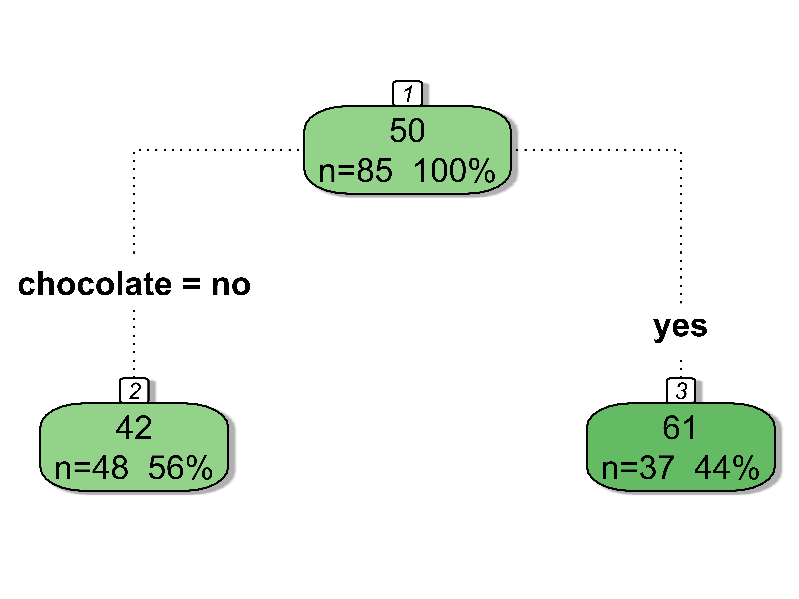
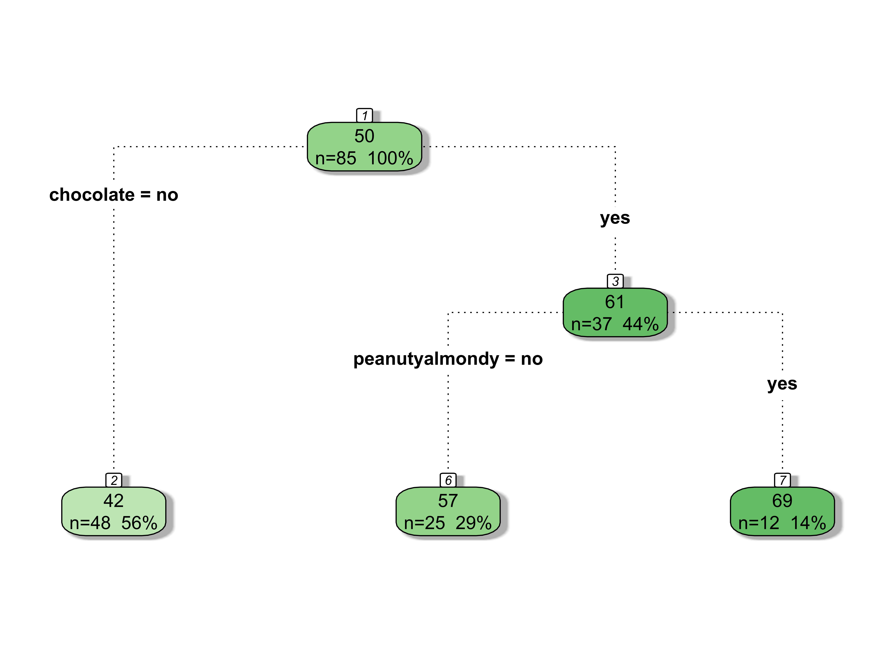
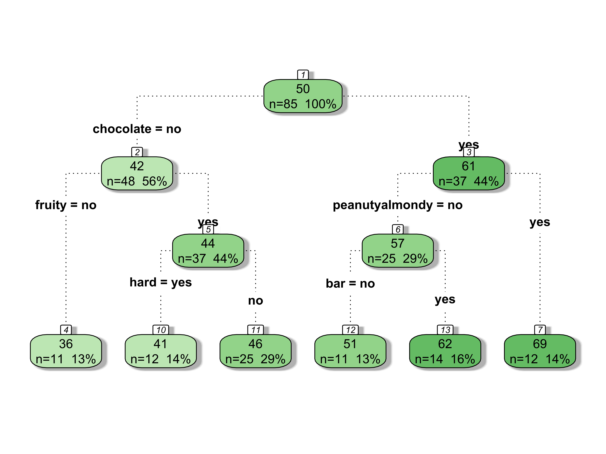
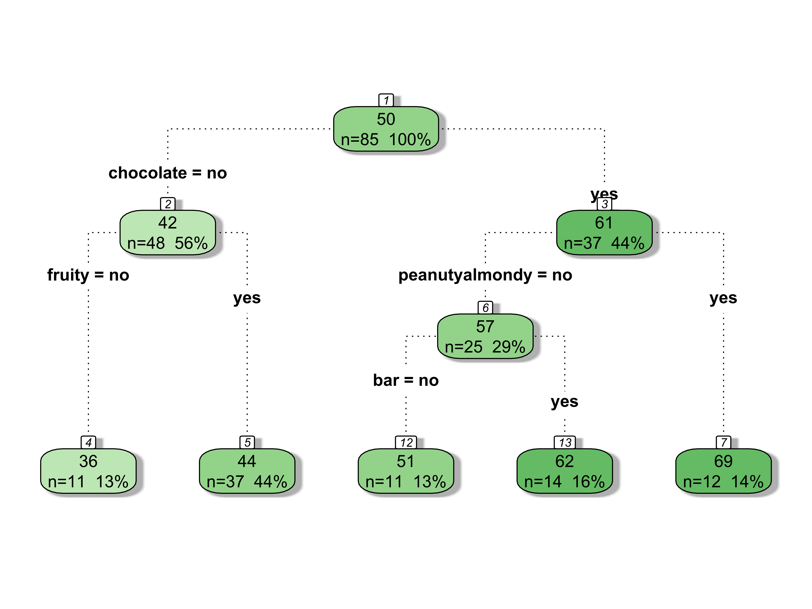
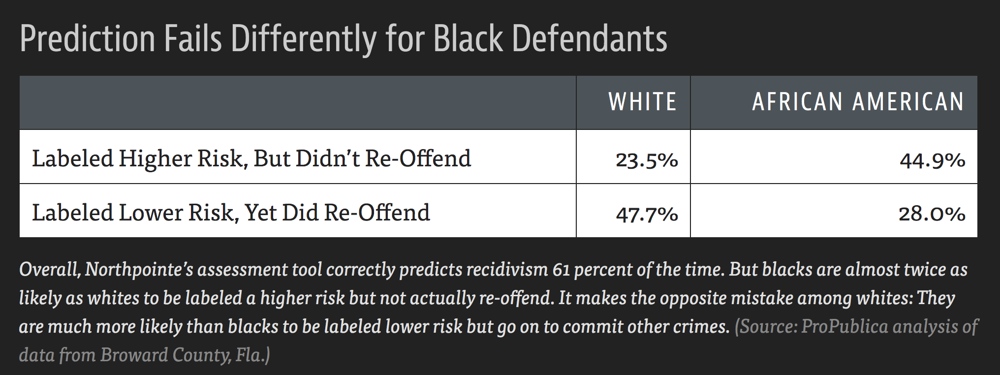
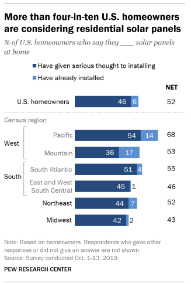
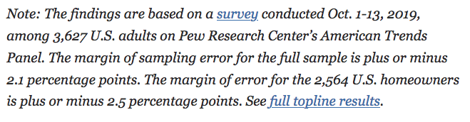
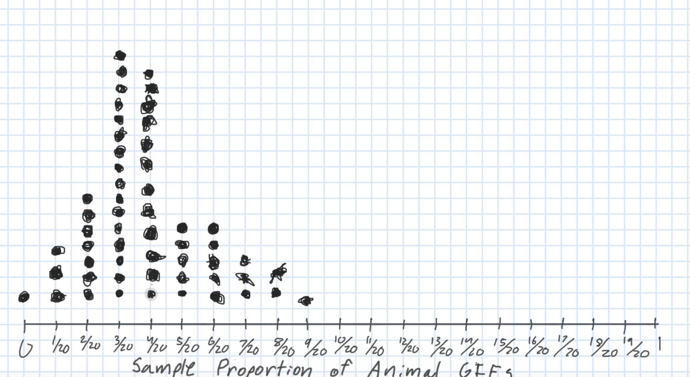

Quantifying Uncertainty
Kelly McConville
DATA 100
Week 8 | Spring 2026
Announcements
- Remember that the code in your problem sets should be your own.
- Load the relevant packages at the top of the Quarto document.
Goals for Today
- Models beyond linear regression
- Modeling & Ethics: Algorithmic bias
- Quantifying uncertainty
- Sampling variability
- Sampling distributions
Beyond Linear Regression
Neural Networks
What people are talking about right now when they say “AI models.
Linear regression on steroids:
- Layers and layers of transformed linear regression models.
- In simple linear regression we have two model parameters: \(\beta_o\) and \(\beta_1\).
- In Gemini 3 Flash, there are between 1.2 and 1.8 trillion parameters.
Won’t fit in DATA 100 but will interact with fitted models.
Regression Trees
- Useful if
- Have a lot of categorical variables (with many categories).
- Expect local interaction effects.
- When the response variable is categorical, then called Classification Trees.
- Let’s explore fitting and interpreting these models.
Example: Return to the Candy Example
- Want to predict when a candy will win!
- Let’s focus on just the categorical explanatory variables.
- Though trees can handle both types.
# Wrangling the data
candy <- read_csv("https://raw.githubusercontent.com/fivethirtyeight/data/master/candy-power-ranking/candy-data.csv") %>%
mutate(pricepercent = pricepercent*100) %>%
select(-competitorname, - sugarpercent, -pricepercent) %>%
mutate(across(.cols = -winpercent, .fns = ~
case_when(.x == 1 ~ "yes",
.x == 0 ~ "no")))
glimpse(candy)Rows: 85
Columns: 10
$ chocolate <chr> "yes", "yes", "no", "no", "no", "yes", "yes", "no", "…
$ fruity <chr> "no", "no", "no", "no", "yes", "no", "no", "no", "no"…
$ caramel <chr> "yes", "no", "no", "no", "no", "no", "yes", "no", "no…
$ peanutyalmondy <chr> "no", "no", "no", "no", "no", "yes", "yes", "yes", "n…
$ nougat <chr> "no", "yes", "no", "no", "no", "no", "yes", "no", "no…
$ crispedricewafer <chr> "yes", "no", "no", "no", "no", "no", "no", "no", "no"…
$ hard <chr> "no", "no", "no", "no", "no", "no", "no", "no", "no",…
$ bar <chr> "yes", "yes", "no", "no", "no", "yes", "yes", "no", "…
$ pluribus <chr> "no", "no", "no", "no", "no", "no", "no", "yes", "yes…
$ winpercent <dbl> 66.97173, 67.60294, 32.26109, 46.11650, 52.34146, 50.…Regression Trees
- Model form is very different from linear regression.
- Split sample into two groups based on an explanatory variable.
- Wants groups to be homogeneous as possible for the response variable.

Regression Trees
- Split the subgroups to make subsubgroups that are even more homogeneous.

Regression Trees
- Keep going until you have a big tree.

Regression Trees
- Then prune back the splits that aren’t very predictive/useful to get the optimal tree.

Coding Regression Trees
Let’s see how to code up what we just did.
Coding Regression Trees
- Fit the regression tree.
cp= complexity parametercp = 0(Grow a very large tree).minsplit= smallest tree allowed.minbucket= how many cases need to be in each bucket of the tree.
Coding Regression Trees
- Look at the amount of error for different cost penalties.
- Pick the
cpwhere thexerroris the lowest (or nearly the lowest).
Regression tree:
rpart(formula = winpercent ~ ., data = candy, method = "anova",
control = rpart.control(cp = 0, minsplit = 2, minbucket = 10))
Variables actually used in tree construction:
[1] bar chocolate fruity hard peanutyalmondy
Root node error: 18187/85 = 213.97
n= 85
CP nsplit rel error xerror xstd
1 0.405154 0 1.00000 1.02387 0.130063
2 0.056141 1 0.59485 0.61273 0.083460
3 0.044027 2 0.53871 0.63730 0.080836
4 0.030254 3 0.49468 0.62188 0.081498
5 0.011297 4 0.46443 0.57739 0.076109
6 0.000000 5 0.45313 0.59377 0.077865Coding Regression Trees
Best cp for this example is just above 0.011297.

Prediction
Can still use the predict() function to predict new observations.
chocolate peanutyalmondy crispedricewafer bar fruity caramel nougat hard
1 yes no yes yes no yes no no
pluribus
1 no 1
62.29856 Data Ethics: Algorithmic Bias
Return to the Americian Statistical Association’s “Ethical Guidelines for Statistical Practice”
Integrity of Data and Methods
“The ethical statistical practitioner seeks to understand and mitigate known or suspected limitations, defects, or biases in the data or methods and communicates potential impacts on the interpretation, conclusions, recommendations, decisions, or other results of statistical practices.”
“For models and algorithms designed to inform or implement decisions repeatedly, develops and/or implements plans to validate assumptions and assess performance over time, as needed. Considers criteria and mitigation plans for model or algorithm failure and retirement.”
Algorithmic Bias
Algorithmic bias: when the model systematically creates unfair outcomes, such as privileging one group over another.
Example: The Coded Gaze
Facial recognition software struggles to see faces of color.
Algorithms built on a non-diverse, biased dataset.
Algorithmic Bias
Algorithmic bias: when the model systematically creates unfair outcomes, such as privileging one group over another.
Example: COMPAS model used throughout the country to predict recidivism
- Differences in predictions across race and gender

- Cynthia Rudin and collaborators wrote The Age of Secrecy and Unfairness in Recidivism Prediction
- Argue for the need for transparency in models that make such important decisions.
Shift Gears: Statistical Inference
The ❤️ of statistical inference is quantifying uncertainty

The ❤️ of statistical inference is quantifying uncertainty
# A tibble: 1 × 1
meanFINCBTAX
<dbl>
1 62480.Like with regression, need to distinguish between the population and the sample
- Parameters:
- Based on the population
- Unknown then if don’t have data on the whole population
- EX: \(\beta_o\) and \(\beta_1\)
- EX: \(\mu\) = population mean
- Statistics:
- Based on the sample data
- Known
- Usually estimate a population parameter
- EX: \(\hat{\beta}_o\) and \(\hat{\beta}_1\)
- EX: \(\bar{x}\) = sample mean
Quantifying Our Uncertainty
R has been giving us uncertainty estimates:
Quantifying Our Uncertainty
R has been giving us uncertainty estimates:
# A tibble: 4 × 7
term estimate std_error statistic p_value lower_ci upper_ci
<chr> <dbl> <dbl> <dbl> <dbl> <dbl> <dbl>
1 intercept 5.57 1.09 5.11 0 3.40 7.73
2 Days -0.598 0.121 -4.96 0 -0.838 -0.359
3 factor(Charlie): 1 -10.1 1.92 -5.25 0 -13.9 -6.29
4 Days:factor(Charlie)1 0.921 0.136 6.75 0 0.65 1.19 Quantifying Our Uncertainty
The news and journal articles are also giving us uncertainty estimates:


Quantifying Our Uncertainty
The news and journal articles are also giving us uncertainty estimates:

Statistical Inference
Goal: Draw conclusions about the population based on the sample.
Main Flavors
Estimating numerical quantities (parameters).
Testing conjectures.
Estimation
Goal: Estimate a (population) parameter.
Best guess?
- The corresponding (sample) statistic
Example: What one word would you use to describe Bucknell?
Estimation
Key Question: How accurate is the statistic as an estimate of the parameter?
Helpful Sub-Question: If we take many samples, how much would the statistic vary from sample to sample?
Need two new concepts:
The sampling variability of a statistic
The sampling distribution of a statistic
Let’s learn about these ideas through an activity!
Sampling Distribution of a Statistic
Steps to Construct an (Approximate) Sampling Distribution:
Decide on a sample size, \(n\).
Randomly select a sample of size \(n\) from the population.
Compute the sample statistic.
Put the sample back in.
Repeat Steps 2 - 4 many (1000+) times.
Sampling Distribution of a Statistic

Center? Shape?
Spread?
- Standard error = standard deviation of the statistic
What happens to the center/spread/shape as we increase the sample size?
What happens to the center/spread/shape if the true parameter changes?